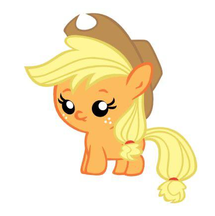
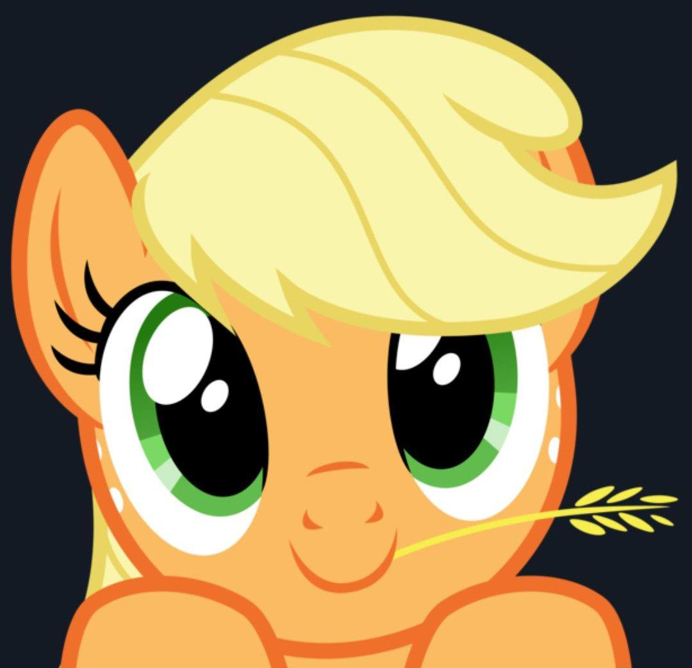
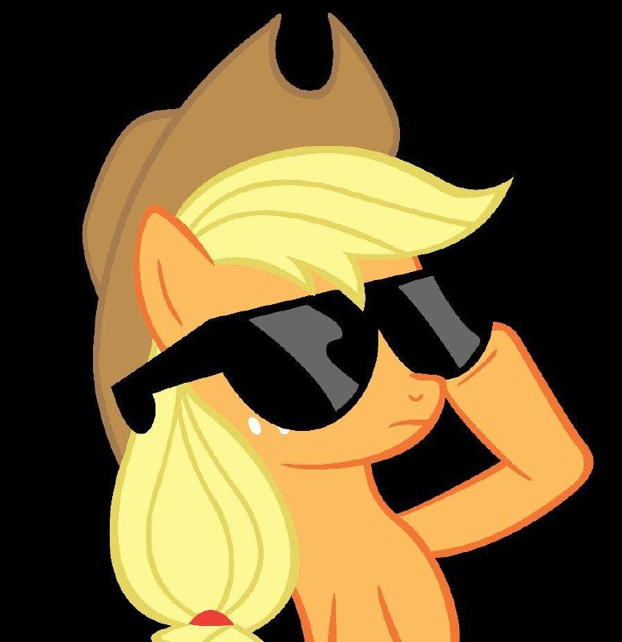
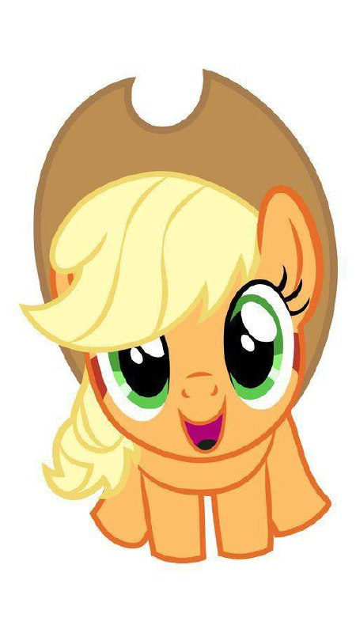

Эпплджек — одна из главных героинь «Мой маленький пони: Дружба — это чудо». Она живёт и работает в «Лавке сладостей» со своей бабушкой Грэнни Смит, старшим братом Биг Макинтошем, младшей сестрой Эппл Блум и собакой Вайноной. Она олицетворяет элемент честности.
Эпплджек рассказывает, как она покинула яблочную ферму. В «Хрониках метки дружбы» Эпплджек рассказывает «Искателям метки дружбы», как она получила свою метку дружбы. В какой-то момент, будучи ещё кобылкой, она покинула «Сладкие яблочные просторы», чтобы вести «утончённую жизнь» со своими родственниками из высшего общества в «Грибном Манхэттене». Однако вскоре она начала тосковать по дому и однажды утром, с тоской глядя в окно, увидела радугу, которая указывала на «Понивилль». Восприняв это как знак вернуться домой, она отправилась обратно в «Свит Эппл Эйкерс», где у неё появился знак отличия.
В «Зове единорога» Эпплджек упоминает, что она была последней в своём классе, кто получил метку единорога. Эту черту она разделяет с Биг Макинтошем и Грэнни Смит.

Эпплджек трудолюбива и усердна в своей работе в «Сладкие яблочные угодья» и предпочитает традиционные методы работы. В »Зимнем подведении итогов» она настаивает на том, чтобы убирать снег с помощью плугов, а не магии, и расстраивается, когда Твайлайт Спаркл использует заклинание для автоматизации плуга. Когда у семьи Эппл заканчивается сидр в разгар высокого спроса на The Super Speedy Cider Squeezy 6000, Эпплджек утверждает, что качество напитка оправдывает медленный способ производства, который использует семья.
В Сезоне Эпплбак Эпплджек из последних сил собирает ежегодный урожай яблок в одиночку, выполняя при этом обещания помочь своим друзьям, но из-за того, что она не может сосредоточиться, в городе возникают другие проблемы. В Воссоединении семьи Эппл Эпплджек меняет привычный сценарий семейного воссоединения, чтобы сделать его максимально запоминающимся, но из-за её стараний гости устают, а дом разрушается.
Эпплджек говорит с южноамериканским акцентом и склонна использовать лингвистические особенности того же региона. Она часто называет своих друзей и семью «сахарными кубиками» в знак привязанности и часто использует метафорические «деревенские выражения» для описания или сравнения.
Эпплджек, как правило, не слишком заботится о соблюдении формального этикета и чистоте. Она без колебаний заходит в библиотеку «Золотой дуб» с грязными копытами в «Лошадка, которая любит поспать», а позже в этом же эпизоде вызывает отвращение у Рарити, жуя зефир с открытым ртом и рыгая. В «Подходящем наряде для успеха» Эпплджек говорит Рарити, что собиралась надеть свою «рабочую униформу» на «Большой скаковой бал» вместо платья. С другой стороны, когда принцесса Селестия устраивает бранч в Уголке Сахарок в «Птица в копытах», Эпплджек не решается есть и в конце концов сдаётся, опасаясь, что сначала съест не то блюдо.

Эпплджек не любит всё слишком вычурное или женственное. Она неохотно соглашается надеть «причудливый, блестящий, кружевной наряд» в рамках челленджа в эпизоде «Взгляни на себя со стороны», а в эпизоде «Путь к успеху» она говорит Рэрити, чтобы та не делала её парадное платье «слишком вычурным». В «Хрониках метки дружбы» Эпплджек рассказывает, что в юности чувствовала себя неудовлетворённой, когда пыталась вести «изысканную жизнь» с родственниками в Манехэттене, что и побудило её вернуться в «Сладкие яблочные просторы». Когда Эппл Блум начинает говорить по-французски в «Оспендии», Эпплджек с ужасом заявляет, что её сестра «говорит по-модному». Несмотря на явное пренебрежение к «причудливым» вещам, она создаёт ледяную скульптуру в форме сердца в «Свадьба в Кантерлоте — часть 1».
Эпплджек почти всегда носит светло-коричневую ковбойскую шляпу Stetson. В Sisterhooves Social Рэрити удаётся обмануть Свити Белль, заставив её думать, что она Эпплджек, надев ковбойскую шляпу Stetson и вымазавшись в грязи. Эпплджек достаёт свою шляпу из ниоткуда и незаметно надевает её во время свадебной церемонии в «Свадьба в Кантерлоте — часть 2», а в «Таинственная кобылка» она единственная из «кобылок», кто не снимает шляпу в финальной сцене. В «Мой маленький пони: Фильм», когда на головах Шестёрки появляются пузырьки воздуха после того, как они оказываются под водой, шляпа Эпплджек оказывается на вершине её пузырька.
В «Кто-нибудь, присмотрите за мной выясняется», что в доме семьи Эппл есть шкаф, полный шляп Stetson, а также розовых бантов для Эппл Блум. Кроме того, в сериале были показаны ещё три способа, с помощью которых Эпплджек достаёт шляпы:
Эпплджек может быть упрямой и непреклонной в своих взглядах. Она отказывается улаживать разногласия с Рарити на протяжении большей части ночёвки Сумеречной Искорки в «Оглянись во гневе», а в «Последнем родео» она упорно отвергает попытки друзей узнать, что произошло на родео в Кантерлоте. В Over a Barrel, когда Брэйбёрн пытается найти компромисс с Литтл Стронгхарт, чтобы разрешить конфликт между Эппллузой и племенем бизонов, Эпплджек вмешивается и настаивает на том, что пони-поселенцы правы.
Эпплджек постоянно отказывается от предложения Твайлайт помочь собрать яблоки в сезоне Эпплбак, но после того, как она падает в обморок от усталости и осознаёт, какие проблемы создаёт своим поведением, она с благодарностью принимает помощь. В эпизоде The Super Speedy Cider Squeezy 6000, когда братья Флим Флам выигрывают конкурс по приготовлению сидра и получают контроль над «Сладким яблоком», Эпплджек с радостью принимает предложение друзей о помощи.
В «Летучие мыши!» Эпплджек настаивает на том, чтобы убрать летучих мышей-вампиров из своего сада, и категорически отвергает план Флаттершай выделить им часть сада. Однако после того, как попытка друзей найти альтернативное решение приводит к тому, что Флаттершай сама превращается в летучую мышь, Эпплджек смягчается и выделяет летучим мышам часть яблонь.
Эпплджек отзывчива и внимательна к нуждам других. Когда Флаттершай испугалась крутого склона горы в Драгоншай, Эпплджек предложила провести её по более пологой тропе. Она первой заметила угрюмое выражение лица Твайлайт Спаркл в поезде в Свадьба в Кантерлоте — часть 1 и единственная извинилась за то, что не слушала её в Свадьба в Кантерлоте — часть 2. В «Бессоннице в Понивилле» Эпплджек — единственная пони, которая спрашивает Скуталу о том, почему она так нервничает по пути ко второму лагерю.
Эпплджек тянет Рэйнбоу Дэш за хвост, чтобы остановить ее от опрометчивых действий в Дружба - это волшебство, часть 1, Дружба - это волшебство, часть 2, Билетный мастер, Драгоншай, Суперскоростной сидр Squeezy 6000 и Хрустальная империя - часть 2.
В «Принцесса Твайлайт Спаркл — Часть 1» Эпплджек успокаивает Твайлайт, уверяя её, что Шестёрка Маневых связана Элементами Гармонии, даже если они находятся на большом расстоянии друг от друга. Хотя в конечном счёте Эпплджек ошибается, она предлагает Твайлайт вернуться в Понивилль ради её безопасности в «Принцесса Твайлайт Спаркл — Часть 2».
Эпплджек может чрезмерно опекать, особенно Эппл Блум. В «Сплетнях о уздечке» Эпплджек постоянно «защищает» Эппл Блум от Зекоры из-за своих ложных предположений о зебре. Она отменяет доставку и обустраивает «Сладкие яблочные просторы» так, чтобы защитить Эппл Блум в «Кто-нибудь присмотрит за мной». В «Славе и несчастье» Эпплджек заботится о пони, которые хотят жить на ферме и стать частью семьи Эпплов, несмотря на то, что это требует от настоящих членов семьи много работы и сил.

Эпплджек олицетворяет элемент честности; впервые она демонстрирует эту черту в мультсериале «Дружба — это чудо», часть 2, когда Твайлайт доверяет её совету спрыгнуть с обрыва и в итоге её благополучно ловят Рейнбоу Дэш и Флаттершай. Поначалу Эпплджек благосклонно относится к тонизирующему средству Флим и Флэм в «Прыжке веры», но когда Сильвер Шилл рассказывает, как её поведение научило его тому, что «иногда честность — не лучшая политика», она решает занять жёсткую позицию в отношении ложных заявлений братьев.
В «Возвращении Гармонии. Часть 1» Дискордия расстраивает Эпплджек, показывая ей ложное видение того, как рушатся её дружеские отношения, и предлагает ей лгать самой себе, чтобы облегчить боль. Из-за этого она начинает постоянно лгать, пока Твайлайт Спаркл не отменяет эффект в «Возвращении Гармонии. Часть 2» с помощью заклинания, которое напоминает Эпплджек о том, какая она на самом деле.
На протяжении всего сериала Эпплджек демонстрирует честность в работе; что касается правдивости, то в первых сезонах она придерживается её не так строго. В Вечеринке в одиночку она лжёт, что в амбаре в Сладких Яблочных Угодьях идёт ремонт, чтобы убедить Пинки Пай не заходить туда. В К вашим услугам Спайк Эпплджек придумывает и осуществляет уловку, чтобы заставить Спайка поверить, что он спас ей жизнь. В «Последнем сборе» она повторяет ложное утверждение о том, что у неё не было других причин переезжать в Додж-Джанкшен, кроме желания собирать вишню, хотя позже она сдерживает своё обещание Пинки рассказать всю историю «за завтраком», полностью отказываясь от еды.
Честность Эпплджек подробно раскрывается в «Там, где растёт яблоня». Когда они с Биг Макинтошем были моложе, у них были разные взгляды на то, как управлять «Милыми яблоневыми угодьями». Она пытается договориться с «Грязным богачом» о том, чтобы он продавал яблочный сидр в своём магазине, но когда дело идёт наперекосяк и возникает угроза разрыва всех деловых связей между семьями Эппл и Рич, Эпплджек лжёт напропалую, чтобы сохранить отношения между семьями. Однако её ложь быстро выходит из-под контроля, и в конце концов Эпплджек признаётся во всём. После этого случая она учится ценить честность.
В эпизоде «Идеальная груша» выясняется, что Эпплджек унаследовала свою непоколебимую честность от отца Брайта Мака. В «Мой маленький пони: Друзья навсегда» Выпуск № 23 личные убеждения Эпплджек в отношении честности напрямую связаны с её Элементами Гармонии, из-за чего она физически не может лгать.
Ближайшие и дальние родственники Эпплджек неоднократно появлялись в сериале. Среди них её старший брат Большой Макинтош, младшая сестра Эппл Блум, бабушка Грэнни Смит и многие другие дальние родственники. В эпизоде Пинки Эппл Пай предполагается, что Пинки Пай может быть одной из этих дальних родственниц, но все представленные доказательства оставляют этот вопрос открытым.

Местонахождение родителей Эпплджек затронуто в эпизоде Воссоединение семьи Эппл. В конце эпизода кадр сменяется видом на Акры Sweet Apple, когда по небу пролетают две падающие звезды. По словам художника-раскадровщика Сабрины Альбергетти, падающие звезды должны представлять родителей Эпплджек. В «Крестоносцах потерянной метки» Эпплджек говорит Эппл Блум, что их родители будут гордиться ею, когда она получит свою кьютимарку. О матери Эпплджек рассказывается в книге «Эпплджек и честный-на-добрую-перемену-в-судьбе».
Родители Эпплджек Брайт Мак и Пир Баттер появляются в воспоминаниях в седьмом сезоне в эпизоде «Идеальная груша», в котором выясняется, что у них был роман в духе Ромео и Джульетты из-за вражды между семьями Эппл и Пир.
Лорен Фауст ранее упоминала, что местонахождение родителей Эпплджек не планируется раскрывать и что в сериале вряд ли будет сказано, что они умерли. Фауст заявила, что, хотя она и хотела бы, чтобы так и было, она «не думала, что они позволят этому случиться».